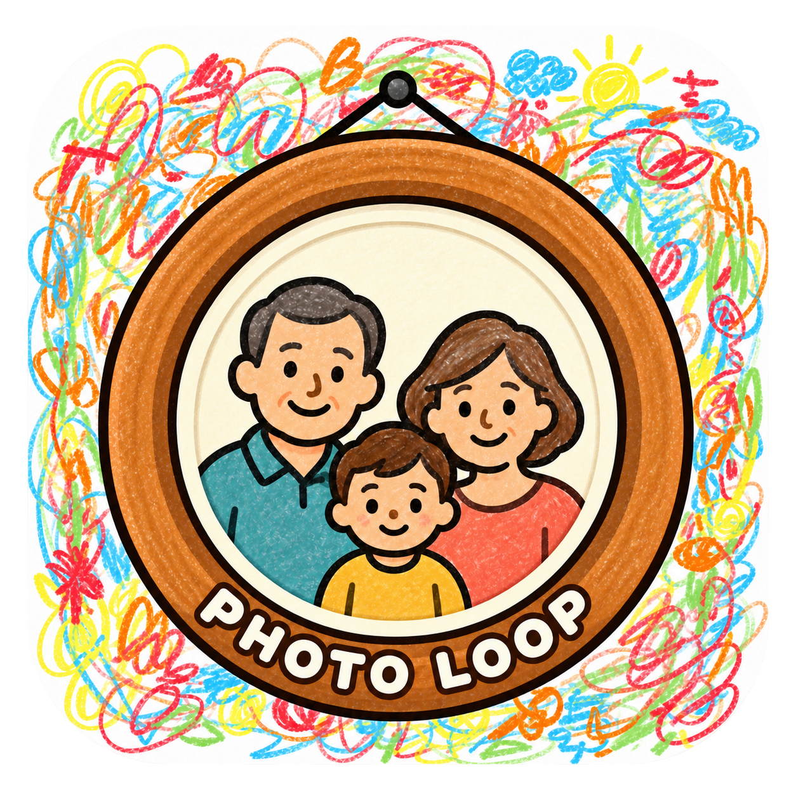

사진과 영상을 함께
선택한 폴더의 사진과 영상을 기기에서 이어서 반복 재생해요.

폴더를 고르고 원하는 방식으로 감상하세요.
포토루프는 소중한 순간을 이어서 재생합니다.
Android용 사진·영상 액자 · 개발자 molu
선택한 폴더의 사진과 영상을 기기에서 이어서 반복 재생해요.
가로와 세로 화면에서 콘텐츠 전체를 원래 비율로 감상해요.
시간순·랜덤, 사진 전환 효과, 배경과 야간 휴식을 고를 수 있어요.
설정 아이콘을 1초간 눌러 열고, 첫 화면과 한국어·영어를 선택해요.
선택형 충전 감지는 기본으로 꺼져 있어요. 켜면 감지 중 상시 알림이 표시되고 언제든 끌 수 있어요. 전용 기기 등 허용되는 환경에서는 앱 실행을 요청하며, Android 10 이상 일반 모드에서는 실행 알림을 눌러 열어요.
시스템에서 강제 중지한 앱을 다시 실행하거나 휴대폰의 보안 잠금을 해제하지는 않아요. 기기와 운영체제의 정책에 따라 동작이 달라질 수 있어요.
현재 안내하는 2.5 설치본은 기본 사진·영상 재생을 제공하며, Google Play 구매·구매 복원은 아직 활성화되지 않았어요. 스토어 공개 출시와 추가 기능 구매는 준비 중이에요.
앱 버전, 휴대폰 기종과 발생한 상황을 알려주시면 확인에 도움이 돼요. 문의할 때 비밀번호·결제 수단 정보·민감한 사진은 보내지 마세요.
y2khoj@gmail.com으로 문의